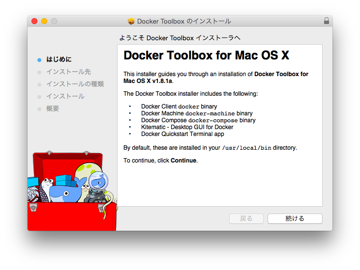
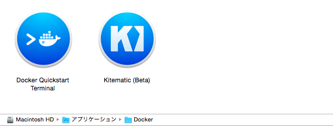

Docker 1.8 のリリースに伴い、Mac OSX 標準の Docker デプロイツールが boot2docker から Docker Toolbox に変更になった模様。とりあえず、インストールしてみた。

re: https://www.docker.com/toolbox
Docker Toolbox は、手元のマシンに、簡単に Docker 開発環境を構築するためのインストーラで、以下のツールが全て含まれている。いままで使用していた boot2docker コマンドは、docker-machine コマンドが代替となる。
- Docker Client
- Docker Machine
- Docker Compose (Mac only)
- Docker Kitematic
- VirtualBox
ref:
インストール
Docker Toolboxサイトからダウンロードしたインストーラは実行するだけ。
インストールには、450MB ほどの空きが必要で、/usr/local 配下(デフォルト)に以下のようなファイルがインストールされた。
1 2 3 4
| /usr/local/bin/docker /usr/local/bin/docker-machine /usr/local/bin/docker-compose /usr/local/share/boot2docker/boot2docker.iso
|
あと、Application フォルダにアプリが２つ。

Docker Quickstart Terminal
上記アプリ「Docker Quickstart Terminal」を実行すると、Mac標準の Terminal.app が起動し、その中で下記スクリプトが実行される。
“/Applications/Docker/Docker Quickstart Terminal.app/Contents/Resources/Scripts/start.sh”
このスクリプトは、VirtualBox 上の VM の名前や VBoxManage を定義して、最終的に以下のコマンドを実行していた。
1
| eval $($DOCKER_MACHINE env $VM --shell=bash)
|
また、Toolbox インストール時に既存の boot2docker の VM をマイグレーションしなかったので、このスクリプトの中で「default」という名前の VM が、自動で作成された。
iTerm2 上で docker コマンドを実行する
アプリ「Docker Quickstart Terminal」だと Termainal.app が起動するので、iTerm2 上で docker コマンドを実行したい場合は、boot2docker の時と同じように env を設定する。
boot2docker の場合
1
| $(boot2docker shellinit)
|
docker-machine の場合
1
| eval $(docker-machine env default)
|
こんな感じ。
1 2 3 4 5 6 7 8 9 10 11 12 13 14 15 16 17 18 19 20 21 22 23 24
| $ eval $(docker-machine env default) $ docker version Client: Version: 1.8.1 API version: 1.20 Go version: go1.4.2 Git commit: d12ea79 Built: Thu Aug 13 02:49:29 UTC 2015 OS/Arch: darwin/amd64 Server: Version: 1.8.1 API version: 1.20 Go version: go1.4.2 Git commit: d12ea79 Built: Thu Aug 13 02:49:29 UTC 2015 OS/Arch: linux/amd64 $ $ docker ps -a CONTAINER ID IMAGE COMMAND CREATED STATUS PORTS NAMES $ $ docker images REPOSITORY TAG IMAGE ID CREATED VIRTUAL SIZE $
|
1 2 3 4 5 6 7 8 9 10 11 12 13 14 15 16 17 18 19 20 21
| $ docker-machine ls NAME ACTIVE DRIVER STATE URL SWARM default * virtualbox Running tcp://192.168.99.100:2376 $ $ docker-machine ssh default ## . ## ## ## == ## ## ## ## ## === /"""""""""""""""""\___/ === ~~~ {~~ ~~~~ ~~~ ~~~~ ~~~ ~ / ===- ~~~ \______ o __/ \ \ __/ \____\_______/ _ _ ____ _ _ | |__ ___ ___ | |_|___ \ __| | ___ ___| | _____ _ __ | '_ \ / _ \ / _ \| __| __) / _` |/ _ \ / __| |/ / _ \ '__| | |_) | (_) | (_) | |_ / __/ (_| | (_) | (__| < __/ | |_.__/ \___/ \___/ \__|_____\__,_|\___/ \___|_|\_\___|_| Boot2Docker version 1.8.1, build master : 7f12e95 - Thu Aug 13 03:24:56 UTC 2015 Docker version 1.8.1, build d12ea79 docker@default:~$
|